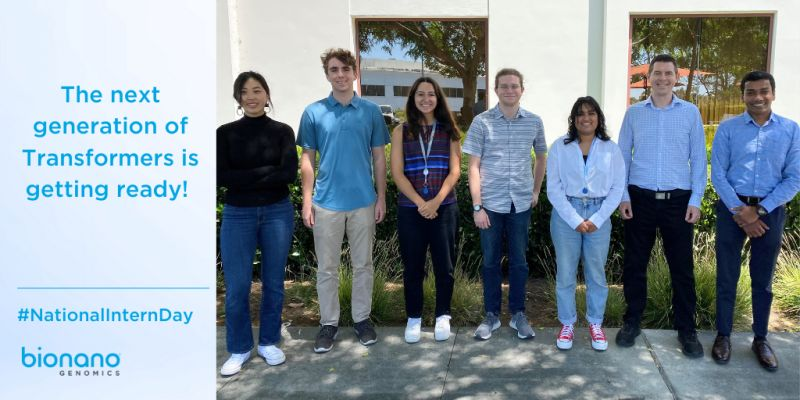

Background

Hi! My name is Hana Chohan. I'm currently a second-year Computer Science student at the Paul G. Allen School for Computer Science at the University of Washington in Seattle. Go huskies!! I'm from San Diego, CA so I'm still getting used to the rainy weather. I love to learn about programming, UX/UI design, and marketing. My current project is building this website using HTML and CSS :) I also know Java and have experience wth C++, Python, Ruby on Rails, and Swift.
Work experience
I'm so lucky to have real work experience that helps me in so many different ways! My customer service experience honed my people skills by teaching me how to successfully communicate, collaborate, and remain patient in difficult situations. This summer, I got to intern at Bionano Genomics as a Software Sales Intern and I gained so much valuable experience in a real corporate setting.